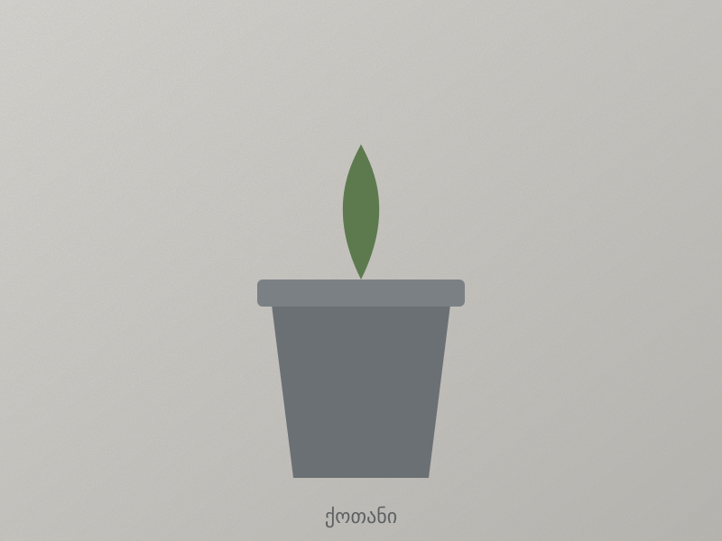
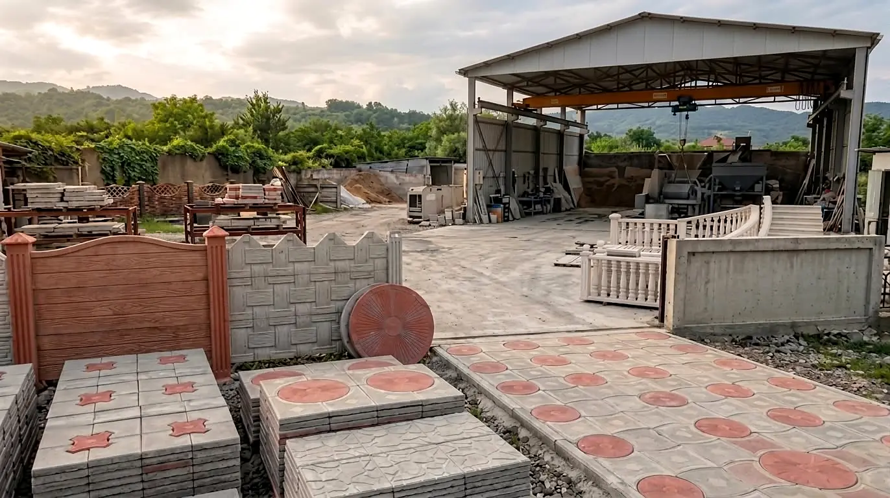
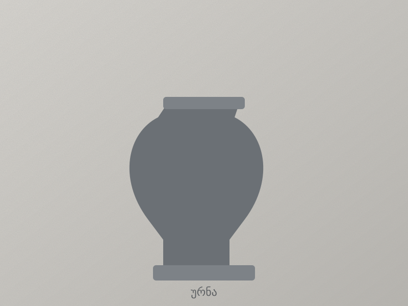
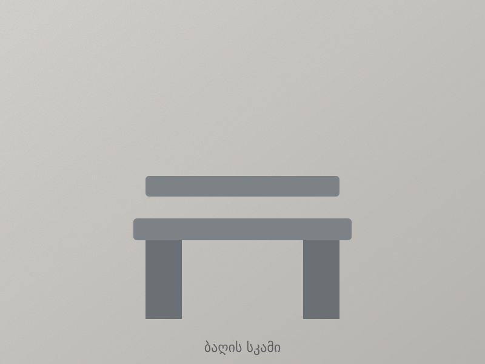
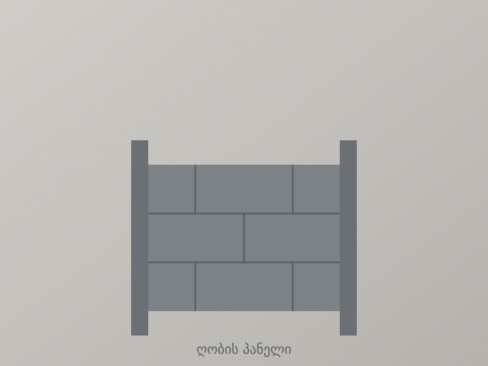
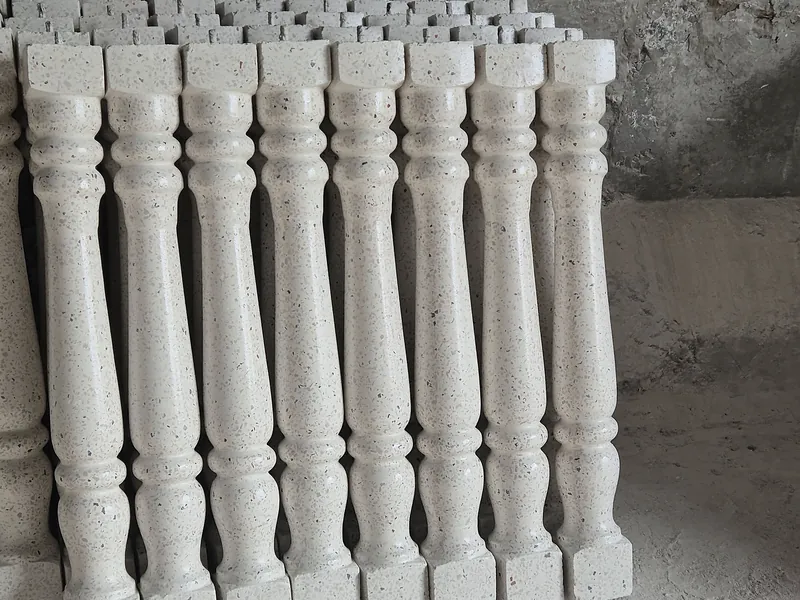
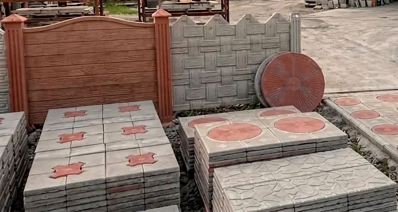

ბაღი და ეზო
ბეტონის დეკორატიული ნაკეთობანი · ქუთაისი
მშენპარკი
გამძლე და ლამაზი ბეტონის ნაკეთობანი თქვენი ეზოს, ბაღისა და ფასადისთვის – ქუთაისში, უკვე 20 წელია.
მშენპარკი მოკლედ
მშენპარკი არის ქუთაისში, სულხან-საბას #8-ზე მოქმედი ბეტონის დეკორატიული ნაკეთობების მწარმოებელი. უკვე 20 წელია ვამზადებთ ყვავილის ქოთნებს, ურნებს, ბაღის სკამებს, ღობის პანელებს, მოაჯირს, დეკორატიულ ბლოკს, ქვაფენილს, ბორდიურს და კედლის პანელებს ეზოების, ბაღებისა და ფასადებისთვის.
- საქმიანობა
- ბეტონის დეკორატიული ნაკეთობების დამზადება
- მდებარეობა
- ქუთაისი, სულხან-საბას #8
- გამოცდილება
- 20 წელი
- შეკვეთა
- მზა მოდელები და ინდივიდუალური ზომა/დიზაინი
- ტელეფონი
- +995 595 53 36 73
რატომ ჩვენ
ხარისხი, რომელიც წლებს უძლებს
დეკორატიული ბეტონი აერთიანებს ქვის სილამაზეს და ბეტონის სიმტკიცეს.
გამძლეობა
მდგრადია ყინვის, წვიმისა და მზის მიმართ, ამიტომ წლების განმავლობაში ინარჩუნებს იერს.
მრავალფეროვანი დიზაინი
სხვადასხვა ფორმა, ფაქტურა და ფერი – კლასიკურიდან თანამედროვემდე.
ინდივიდუალური შეკვეთა
შეგვიძლია დავამზადოთ თქვენი ზომისა და დიზაინის ნაკეთობა.
პროდუქცია
ჩვენი ნაკეთობანი
აირჩიეთ მზა მოდელი ან შეგვიკვეთეთ ინდივიდუალური დამზადება.

ბაღი და ეზო
ბაღი და ეზო
ღობე და მოაჯირი
ღობე და მოაჯირიმოაჯირი
ღია ფერის ბეტონის ბალუსტრები ქვის წვრილი ჩანართებით – კიბეების, ტერასებისა და აივნის მოაჯირისთვის.
შეკვეთა ღობე და მოაჯირი
ღობე და მოაჯირი

ჩვენ შესახებ
ბეტონი, რომელიც დეკორია
მშენპარკი ამზადებს ბეტონის დეკორატიულ ნაკეთობებს ეზოების, ბაღების, ტერასებისა და ფასადებისთვის.
- ხარისხიანი მასალა
- ფორმებისა და ფაქტურების ფართო არჩევანი
- დამზადება შეკვეთით
ხშირად დასმული კითხვები
კითხვები და პასუხები
რა არის მშენპარკი და რას აწარმოებს?
მშენპარკი არის ქუთაისში მოქმედი კომპანია, რომელიც უკვე 20 წელია ამზადებს ბეტონის დეკორატიულ ნაკეთობებს: ყვავილის ქოთნებს, ურნებს, ბაღის სკამებს, ღობის პანელებს, მოაჯირს, დეკორატიულ ბლოკს, ქვაფენილს, ბორდიურს და კედლის პანელებს ეზოების, ბაღებისა და ფასადებისთვის.
სად მდებარეობს მშენპარკი?
მშენპარკი მდებარეობს ქუთაისში, სულხან-საბას #8. ზუსტი ადგილმდებარეობა Google Maps-ზე ჩანს კონტაქტის გვერდზე.
როგორ დავუკავშირდე მშენპარკს ან როგორ შევუკვეთო ნაკეთობა?
დაგვირეკეთ ნომერზე +995 595 53 36 73 ან მოგვწერეთ Facebook-ზე. გიპასუხებთ პროდუქციის შერჩევაზე, ზომებსა და მიწოდებაზე.
შეიძლება თუ არა ინდივიდუალური ზომისა და დიზაინის ნაკეთობის შეკვეთა?
დიახ. გვაქვს მზა მოდელები, თუმცა შეგვიძლია დავამზადოთ თქვენი ზომისა და დიზაინის ნაკეთობაც.
რა არის დეკორატიული ბეტონი?
დეკორატიული ბეტონი არის ბეტონი, რომელსაც ფორმის, ფაქტურისა და ფერის საშუალებით დეკორატიული იერი ეძლევა. ის აერთიანებს ქვის სილამაზეს და ბეტონის სიმტკიცეს.
გამძლეა თუ არა ბეტონის დეკორატიული ნაკეთობები ყინვისა და წვიმის მიმართ?
დიახ. მშენპარკის ბეტონის ნაკეთობები მდგრადია ყინვის, წვიმისა და მზის მიმართ, ამიტომ წლების განმავლობაში ინარჩუნებს იერს.
რა ღირს ბეტონის დეკორატიული ნაკეთობები?
ფასი დამოკიდებულია ნაკეთობაზე, ზომასა და რაოდენობაზე. ზუსტი ფასის გასაგებად დაგვირეკეთ: +995 595 53 36 73.